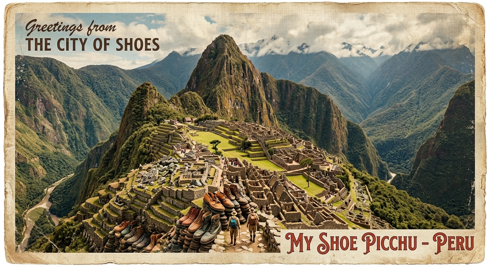
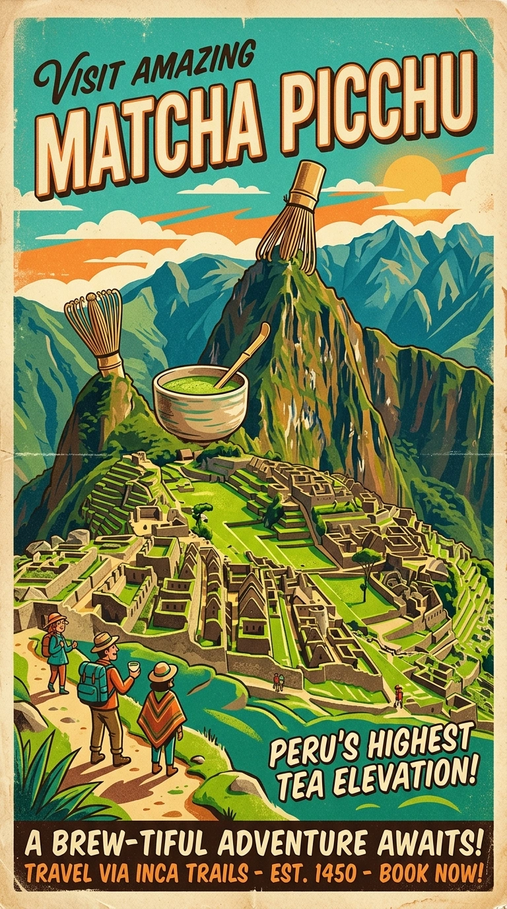

Challenge #028
🌎 Americas
Medium Puzzle
3 Parody Reviews
Machu Picchu: Comical History & 1-Star Tourist Review
Peru's Fifteenth-Century Andean Citadel Prioritizes Earthquake-Proof Granite Over Squat Racks
Real Location
📍 Cusco Region, Peru
Coordinates
🧭 13.1631° S, 72.5450° W
Angry Reviewer
🗣️ GrumpyGymBro
⭐ The Confused Tourist’s 1-Star Review
★☆☆☆☆
“False Advertising on the Peak!”
Reviewed by GrumpyGymBro • Verified Misguided Visitor
“Came for the Inca-redible biceps, found only old stones.”
Additional Tourist Complaints & Clues
- “My quads are burning... not from lifting, but endless stone steps!”
- “Advertised as 'Peak Physique,' but it's just a mountain with old walls.”
Can you guess the punny parody landmark name from this review?
Test your wordplay in the interactive puzzle mode with progressive hints.
🎯 Solve Challenge #028 Live →
🏛️ The Real Machu Picchu: A Field Guide
Built around 1450 at an elevation of 2,430 meters on a narrow saddle between two Andean peaks as a royal estate for Inca Emperor Pachacuti, Machu Picchu was occupied for less than a century before being abandoned during the Spanish conquest, though the conquistadors never found it. Its two hundred dry-stone buildings use classical Inca ashlar masonry, in which multi-ton granite blocks were pounded into polygonal shapes with river-cobble hammerstones so precisely that a credit card cannot slide between the joints, allowing the walls to dance and resettle during earthquakes without mortar. When Yale lecturer Hiram Bingham III arrived in July 1911, an eleven-year-old local farm boy named Pablito Alvarez guided him up the ridge to terraces his family was using to grow sweet potatoes.
Reaching the Sun Gate today without hiking four days over Dead Woman's Pass requires an early train from Ollantaytambo to Aguas Calientes, followed by a thirty-minute white-knuckle bus ride up the Hiram Bingham Highway's fourteen unpaved switchbacks with no guardrails. Peruvian cultural officials now divide the citadel into strict one-way numbered circuits with four-hour maximum limits: step five yards backward to retake a photograph or bring a walking stick without a rubber tip, and a whistle-blowing ranger materializes from behind a sacrificial rock to march you toward the exit. There are zero toilets inside the archaeological zone, meaning the two-sol restroom turnstile outside the main gate commands the fiercest queue in the Andes.
Three thousand hand-cut stone steps did nothing for the upper-body routine of @GrumpyGymBro, who chugged a pre-workout shake in Aguas Calientes expecting Macho Picchu. In 'False Advertising on the Peak!', our disgruntled bodybuilder complained that he 'came for the Inca-redible biceps, found only old stones' and protested that endless terraced staircases burned his quads without offering a single bench press or dumbbell rack. Admittedly, hauling twenty-ton white granite blocks up a cloud-forest cliff without iron tools or draft animals was the ultimate fifteenth-century CrossFit workout, but giving Emperor Pachacuti one star for not installing a wall-to-wall mirror and a whey-protein smoothie bar in the Temple of the Three Windows is tough.
💡 Practical Visitor Tip: Make sure you specifically buy Circuit 2 (Classic Designed Route) months in advance if you want the famous upper-terrace postcard view AND access to the main stonework below, and use the bathroom before scanning your ticket.
✉️ Official Management Reply & Parody Postcard
Want to play the puzzle first? Click Play Challenge #028 above, or expand the archive dossier below to see the parody landmark answer and management response.
🔓 Reveal Parody Answer, Illustrated Postcard & Owner Response (Spoiler)
Parody Landmark: Macho Picchu
Official Response from Management (Machu Picchu):
“Dear @GrumpyGymBro, we are an ancient Incan citadel high in the Andes, not a fitness center. Our 15th-century architecture isn't designed for "Peak Physique" training.”
🎭 More 1-Star Parody Reviews of Machu Picchu
Some landmarks inspire more than one spectacular tourist misunderstanding. Explore every unlocked PunFiction parody challenge for Machu Picchu right here:
★☆☆☆☆
“Lost my sole, found a stench!”
Reviewed by StinkyFoot • Verified Misguided Visitor
“Ancient Peruvian craftsmanship? More like ancient shoe funk... awful climb!”
Additional Clues
- “Terraced hills of footwear... impossible to tie, always tripping!”
- “This 'peak' experience just made my feet incredibly, utterly sore.”
All those stone staircases took a heavy toll on StinkyFoot, who limped down the Andes after visiting what they thought was "My Shoe Picchu." In a pungent review titled "Lost my sole, found a stench!", this footsore hiker compares fifteenth-century Inca masonry to "ancient shoe funk" and claims they encountered "terraced hills of footwear... impossible to tie, always tripping!" Admittedly, anyone who hikes the four-day Inca Trail without changing their wool socks is going to produce an aroma capable of stunning a condor at fifty paces, and the stone steps are steep enough to destroy cheap sneakers. Still, blaming Emperor Pachacuti because you forgot foot powder is a stretch.
🔓 Reveal Challenge #083 Parody Answer, Postcard & Owner Reply
Parody Landmark: My Shoe Picchu

Official Response from Management (Machu Picchu):
“Dear @StinkyFoot, our ancient Inca citadel is a breathtaking wonder of stone masonry, not a shoe to develop 'ancient shoe funk' or to tie. Perhaps you've confused us with a lost-and-found bin?”
★☆☆☆☆
“Definitely Not My Cup of Tea!”
Reviewed by SteepedInSorrow • Verified Misguided Visitor
“Too many ancient green powders... gave me altitude-induced jitters!”
Additional Clues
- “These tiered fields just for drying leaves? My llama wasn't impressed.”
- “Such a long trek for a bitter, grainy beverage in the clouds.”
None of this ashlar granite engineering satisfied @SteepedInSorrow, who filed "Definitely Not My Cup of Tea!" after trekking into the Andes for "Matcha Picchu" and complaining that the agricultural terraces produced "a bitter, grainy beverage in the clouds." Mistaking a fifteenth-century Inca citadel in Cusco for an artisanal Japanese green tea bar takes an astronomical amount of phonetic confusion. While local hotel lobbies in Cusco gladly hand out cups of warm coca-leaf tea to stop tourists from passing out from altitude sickness, scraping green lichen off the Temple of the Sun to whisk into a frothy latte will get you permanently deported by Peru's Ministry of Culture.
🔓 Reveal Challenge #112 Parody Answer, Postcard & Owner Reply
Parody Landmark: Matcha Picchu

Official Response from Management (Machu Picchu):
“Dear @SteepedInSorrow, we are an ancient Incan citadel, not a tea plantation or a mountaintop cafe. Our magnificent agricultural terraces were for crops, not for drying your so-called 'green powders' or brewing beverages.”